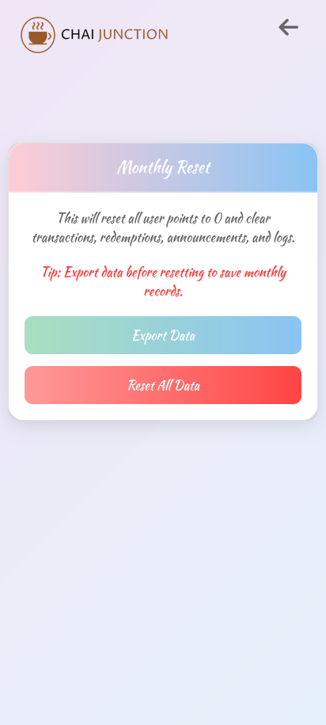
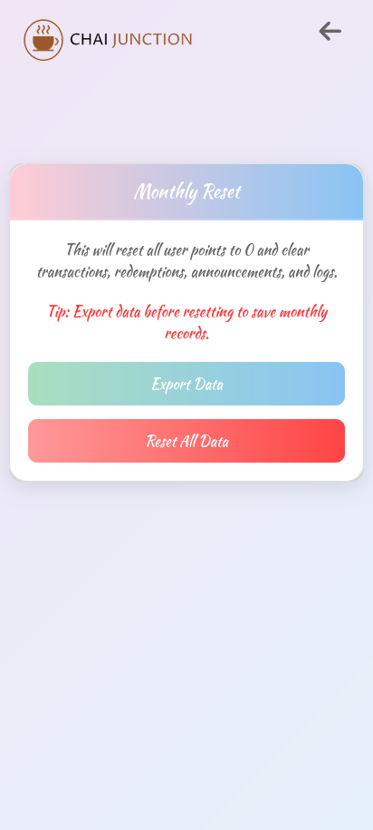

Inner-Circle - Overview
Inner-Circle is a comprehensive Customer Relationship Management (CRM) system specifically
designed for Chai Junction Cafe. This web application aims to enhance customer engagement and
streamline cafe management through an innovative loyalty program and efficient management tools.
Since its initial launch in 2023, Inner-Circle has undergone major updates each year,
continuously evolving to meet the growing needs of Chai Junction Cafe. From UI enhancements to
new feature integrations, each version has brought significant improvements. With the release of
version 3 in 2025, Inner-Circle has fully transitioned from a web-based platform to a dedicated
mobile app for both customers and administrators—delivering a more seamless, accessible, and
intuitive experience.
The application offers features such as customer registration and login, points accumulation
based on purchases, and points redemption for discounts or free items. These functionalities
encourage repeat business and enhance customer satisfaction.
Additionally, Inner-Circle provides an admin dashboard for cafe managers to monitor customer
activities, manage the loyalty program, and generate reports, thereby improving operational
efficiency.
Duration: 5 weeks(v3)
Client: Chai Junction Cafe
Tools: PHP, MySQL, HTML, CSS, JavaScript
The goal is to provide a user-friendly, responsive, and secure platform for Chai Junction Cafe
to manage customer relationships effectively.
In the third version, the UI has been revamped with a modern, user-friendly design. The layout
now prioritizes mobile view over desktop, making the app more responsive and easier to navigate
on all devices.
Key Features
Inner-Circle offers a range of features designed to provide a seamless customer relationship
management experience:
Version Upgrades & Platform Shift
Inner-Circle has seen major yearly updates from 2023 to 2025, introducing UI enhancements and
new features with each release. With Version 3, the platform has shifted from a web-based
system to a full-fledged mobile app, enhancing accessibility and performance for both users
and administrators.
Customer Registration and Login
Users can create accounts, log in, and manage their profiles, facilitating personalized
interactions.
Points Accumulation
Customers earn points based on their purchase amounts, encouraging repeat business and
enhancing customer satisfaction.
Points Redemption
Points can be redeemed on specific days for discounts or free items, with certain items
excluded from the program.
Admin Dashboard
Cafe managers have access to an admin dashboard to monitor customer activities, manage the
loyalty program, and generate reports.
Responsive Design
The application is designed to provide a seamless experience on both desktop and mobile
devices.
Design & UI
The design of Inner-Circle focuses on simplicity, clarity, and accessibility to enhance user
experience.
Clean and Intuitive Interface
A minimalist design with well-structured sections to avoid clutter, ensuring users can
navigate the app effortlessly.
Consistent Color Palette
Utilizes a calming color scheme to reflect trust and professionalism, enhancing the visual
appeal of the app.
Responsive Design
Built with a mobile-first approach, ensuring the app works flawlessly on smartphones,
tablets, and desktops.
Technology Stack
Inner-Circle is developed using a robust and scalable technology stack to ensure smooth
performance.
Frontend
HTML5 & CSS3: For structured markup and styling, ensuring a responsive
and accessible interface.
JavaScript: Handles dynamic UI behavior, enhancing interactivity and
user engagement.
Backend
PHP: Manages server-side logic, form submissions, and authentication
processes.
MySQL: Handles storage and retrieval of customer data with relational
integrity.
Deployment & Hosting
Inner-Circle’s deployment is designed with reliability and user accessibility in mind.
Hosting Strategy
The app is hosted on a reliable server with SSL enabled, ensuring secure and fast access
for users.
Security & Access
SSL encryption secures all data transmissions. The app implements authentication and
authorization mechanisms to protect user data.
Performance Optimization
Efficient database queries and optimized front-end code ensure fast load times and
minimal latency across devices.
 
